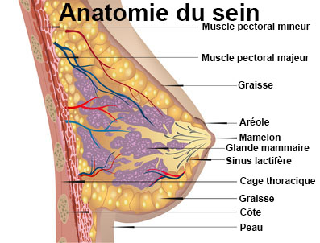
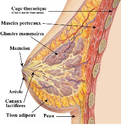

La mammectomie
Definition
Soins infirmiers en
pre-operatoire
Soins infirmiers en
post-operatoire
Relation d'aide
Education et conseils e
la patiente
Definition
La
mammectomie est l'ablation de la glande mammaire, lorsque celle-ci est
atteinte d'une tumeur maligne : le cancer
du sein.

Soins
infirmiers en pre-operatoire
- Etablir une relation de confiance, etre
e l'ecoute.
- Evaluer ce que la patiente sait de son
diagnostic.
- Preparation dossier :
- Bilan sanguin : NFS, coagulation, groupe
sanguin et double determination de RAI datant de moins de 3 jours,
marqueurs tumoraux (ACE, CA 15-3).
- Radiographie pulmonaire,
electocardiogramme.
- Bilan d'extension : scintigraphie
osseuse, echographie hepatique.
- Preparation physique :
- A jeun des minuit.
- Champ operatoire : cou, aisselle, bras,
ombilic.
- Douche antiseptique.
- Pas de vernis, ni de bijoux, ni de
prothese.
- Faire uriner avant la premedication et
avant d'aller au bloc.
- Tenue de bloc, bracelet d'identification.
- Prise des constantes.
- Premedication : ne plus se lever apres.
Soins
infirmiers en post-operatoire
Soins e J0
- Surveillance des parametres : tension
arterielle, pouls, frequence respiratoire, conscience.
- Surveillance du pansement : absence de
saignement, effet compressif.
- Surveillance des redons : en declive,
aspect, quantite, aspiration.
- Surveillance de la voie d'abord veineuse
place e l'oppose du bras opere.
- Surveillance de la douleur.
- Installation en decubitus dorsal,
surelever le bras opere afin que la circulation se remette en place :
pour eviter un lymphœdeme provoquer par l'engorgement des tissus par la
lymphe : irreversible. Surveillance œdeme.
- Alimentation legere le soir.
Soins les jours suivants
- Lever precoce e J1.
- Aide e la toilette.
- Refection du pansement e J2
en presence du chirurgien, car la patiente peut ne pas etre pretre e
regarder : lui decrire la cicatrice, l'aspect, l'evolution.
- Ablation du redon antero-parietal entre J3
et J5. Ablation du redon axillaire entre J5
et J7.
- Ablation des fils e J10.
- Kinesitherapie : mobilisation du bras :
mouvement de rotation, eviter la contracture capsulaire.
Relation
d'aide
La relation d'aide est
essentielle pour la patiente ayant subie une mammectomie.
- Aide au travail de deuil : sein est
symbole de feminite, de reconfort, de maternite, de sexualite.
- Apporter une reponse adaptee aux besoins
de la personne.
Education
et conseils e la patiente
- Pour eviter toute atteinte du bras,
avant-bras et main :
- Port de manches longues si risque de
griffure.
- Port de soutien-gorge en coton.
- Port de gants pour jardiner, vaisselle,
cuison.
- Ne pas arracher les peaux autour des
ongles mais les couper.
- Ne pas utiliser de rasoir mecanique pour
l'aisselle.
- Eviter les coups de soleil.
- Pour eviter toute compression :
- Port de manches souples.
- Montre, bracelets larges.
- Ne pas dormir sur le bras du cete opere
pour ne pas bloquer la circulation.
- Ne pas porter de charge lourde avec le
bras du cete operer.
- Eviter du cete opere : injection, prise
de sang, prise de constantes.
- Masser la cicatrice pour redonner de la
souplesse.
Diagnostics infirmiers
- Anxiete liee e l'intervention.
- Anxiete liee e un manque de connaissance.
- Perturbation du concept de soi liee aux
consequences de la pathologie.
- Perturbation de l'image corporelle liee
au traitement.
- Perturbation de l'estime de soi.
- Perturbation de la sexualite liee e la
nouvelle image du corps.
Voir aussi :